在日常生活中，我们经常会遇到将一个图形切割成几个相同的或有其他规定要求的图形，或者反过来，将几个图形按一定的条件拼补成一个图形的问题．这就是数学研究中的“图形的分割与组合”，或叫“图形的切拼”．它的实质是一种“等积变形”．这类问题不仅趣味性强，而且具有很大的实用价值．解决这类问题没有固定的格式，但又有规律可循，通常可以先从计算面积入手，然后再通过观察和分析，得到一些有益的启发，最后找到答案．
【解题技巧】
在图形的分割、拼合和剪拼的过程中，要结合所提供的图形特点来思考．
1．如果把一个图形分割成若干个大小、形状相等的部分，那么就要想办法找图形的对称点，把图形先分少，再分多．
2．图形中，如果有数量方面的要求，可以先从数量入手，找出平分后每块上所含数量的多少，再结合数量来分割图形．
3．如果是要把几个图形拼合成一个大图形，要特别注意每条边的长度，把相等的边长拼合在一起，先拼少的，再拼多的．
4．如果是剪拼图形，要抓住“剪拼前后图形的面积相等”这个关键点，根据已知条件和图形的特点，通过分析推理和必要的计算，确定剪拼的方法．
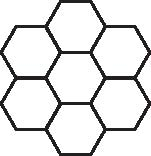
（第七届“希望杯”决赛）如图所示，拼一朵花需要30根小木棒，在此基础上，最少需增加（ ）根小木棒才能拼成两朵花．
A．11
B．15
C．17
D．19
【答案】 A．
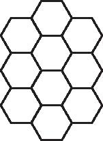
【解析】 如图所示，拼成两朵花最少用41根小棒，因此增加了41-30＝11（根）小棒．
【举一反三1】
下列四个图形是由四个简单图形A、B、C、D（线段和正方形）组合（记为*）而成．则图①～图④中表示A*D的是____（填序号）．
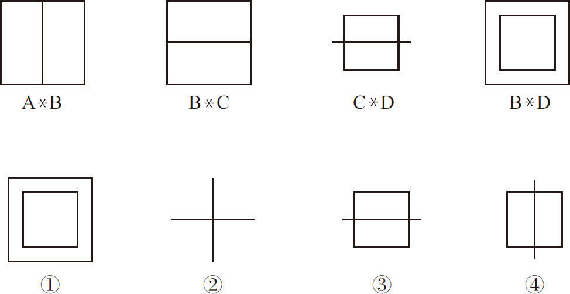
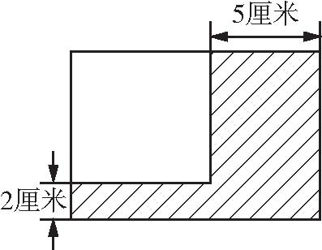
（第九届“希望杯”初赛）如图所示阴影部分的面积是66平方厘米，则图中正方形的面积是___平方厘米．
【答案】 64．
【解析】 设正方形的边长为x 厘米，由条件“阴影部分的面积是66平方厘米”可知，把阴影面积分割成三部分，即5x 、2x 、2×5，利用三部分面积和是66平方厘米的等量关系列方程可求得边长是多少，进而再求得正方形的面积．
解：设正方形的边长为x 厘米，列方程
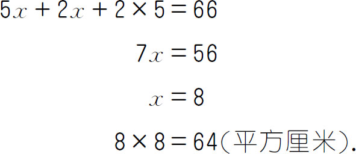
答：图中正方形的面积是64平方厘米．
【举一反三2】
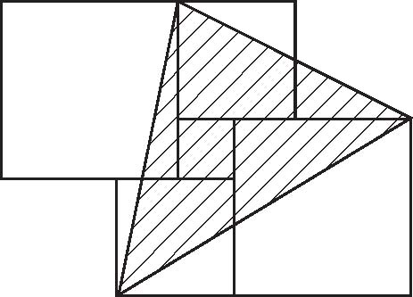
（第八届“希望杯”决赛）如图所示，2个大正方形、2个中正方形和1个小正方形紧挨着排在一起，其中大、中、小正方形的边长分别为3、2、1，那么阴影部分的面积是多少？
（第十一届“希望杯”决赛）如图所示是一块宅基地的平面图（单位：米），其中相邻的两条线段都互相垂直．求这块宅基地的周长和面积．
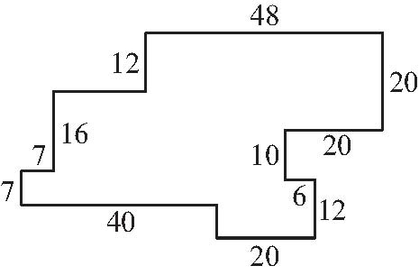
【答案】 这块宅基地的周长是244米，面积是2036平方米．
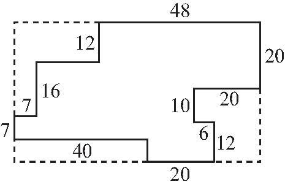
【解析】 如图所示，把这个图形中竖着的小线段向左右平移，横着的小线段向上下平移，则这个宅基地的周长等于长是40＋20＋20-6＝74（米），宽是20＋10＋12＝42（米）的长方形的周长与两条6米的线段的长度之和，即（74＋42）×2＋2×6＝244（米）；这个宅基地的面积则等于这个大长方形的面积减去5个小长方形的面积之差，即74×42-（74-48）×12-16×7-（42-12-16-7）×40-（10＋12）×（74-40-20）-10×6＝3108-312-112-280-308-60＝2036（平方米）．
【举一反三3】
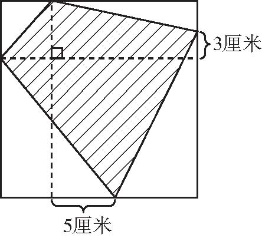
如图所示，边长为12厘米的正方形里面有一块阴影部分，阴影部分的面积是____平方厘米．
（第九届“走美杯”初赛）如图是一个6×6的方格表，现在沿格线将它分割成n 个面积各不相等的长方形（含正方形）．n 最大是____．
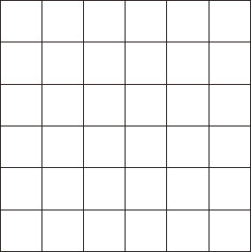
【答案】 7．
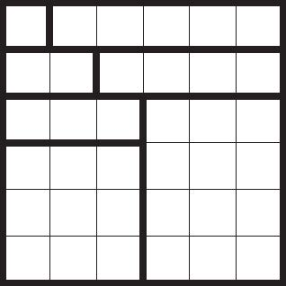
【解析】 这个图形的总面积是6×6＝36，又因为每个小长方形的面积之和各不相同，1＋2＋3＋…＋8＝36，所以n ≤8．若n ＝8，则8个长方形面积只能是1、2、3、4、5、6、7、8，其中7为质数，所以面积为7的长方形只能为7×1．在6×6的方格中无法画出，所以n ≤7．而当n ＝7时，在这个方格图中分别画出面积是1、2、3、4、5、9、12的小长方形即可．
【举一反三4】
16个正方形拼成如图所示的大长方形．已知其中最小的正方形面积是1平方厘米，那么大长方形的面积是___平方厘米．
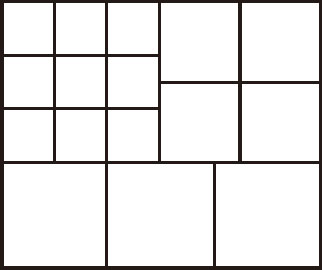
1．图1是由下面①～⑤的五种基本图形中的两种拼成的，这两种基本图形是（ ）．
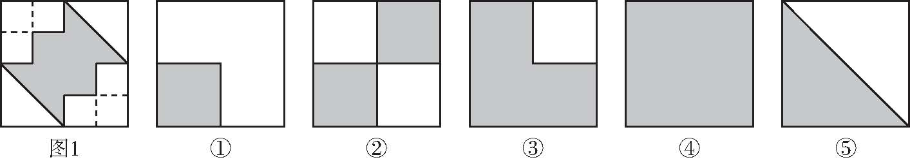
A．③⑤
B．②④
C．①⑤
D．②⑤
2．（第九届“希望杯”决赛）如图所示，大小两个正方形并排放在一起，请分别在图②和图③中用阴影标出一个几何图形（不一定是三角形，可以是任意的多边形），使它的面积等于图①中的阴影面积．（直接作图，不写解答过程）
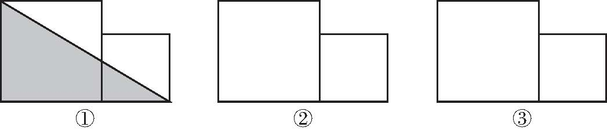
3．将下图分割成两块，然后拼成一个正方形．
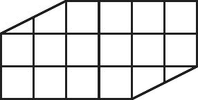
4．用四块相同的不等腰的直角三角板，拼成一个外面是正方形，里面有正方形孔的图形．
5．（第九届“希望杯”初赛）用长是9厘米、宽是6厘米、高是7厘米的长方体木块叠成一个正方体，至少需要这种长方体木块多少块？
6．如图所示的长方形纸片（单位：厘米），假如按图中所示剪成四块，这四块纸片可拼成一个正方形．那么所拼成的正方形的边长是____厘米．
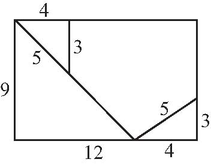
7．有四个同样大小的直角三角形，每个直角三角形的两条直角边的长都是大于1的整厘米数，面积为10平方厘米，用这四个直角三角形不重叠放置围成含有两个正方形图案的图形．在可以围成的所有正方形图案中，最小的正方形的面积是____平方厘米，最大的正方形的面积是____平方厘米．
8．图①是常见的一副七巧板的图，图②是用这副七巧板的七块板拼成的“小房子”图形．那么，第二块板的面积等于整副图的面积的____，第四块板的面积与第七块板的面积的和等于整副图的面积的____．
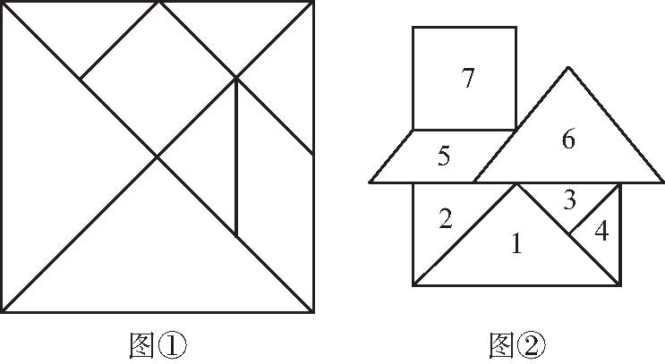
9．（第二届“希望杯”初赛）将长15厘米，宽9厘米的长方形的长和宽都分成三等份，长方形内任意一点与分点及顶点连接，如图所示，则阴影部分的面积是____平方厘米．
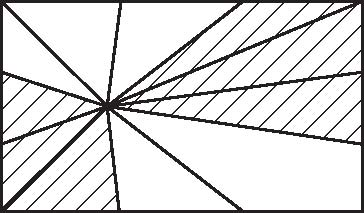
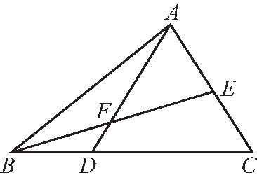
10．如图所示，三角形B A C 的面积是1，E 是A C 的中点，点D 在B C 上，且B D∶D C ＝1∶2，A D 与B E 交于点F ，则四边形DFEC 的面积等于____．
11．（1）用1×1，2×2，3×3三种型号的正方形地板砖铺设23×23的正方形地面，请你设计一种铺设方案，使得1×1的地板砖只用一块．
（2）请你证明：只用2×2，3×3两种型号的地板砖，无论如何铺设都不能铺满23×23的正方形地面而不留空隙．